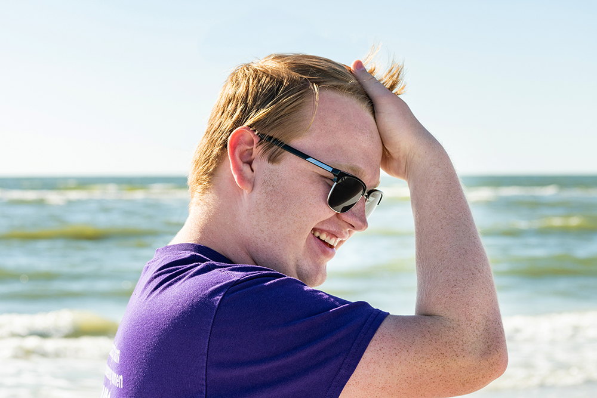
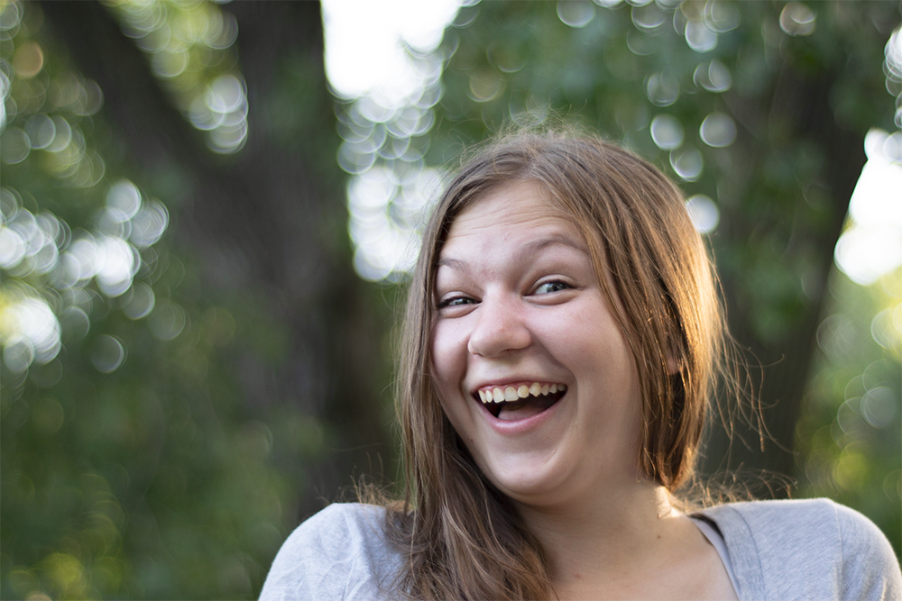
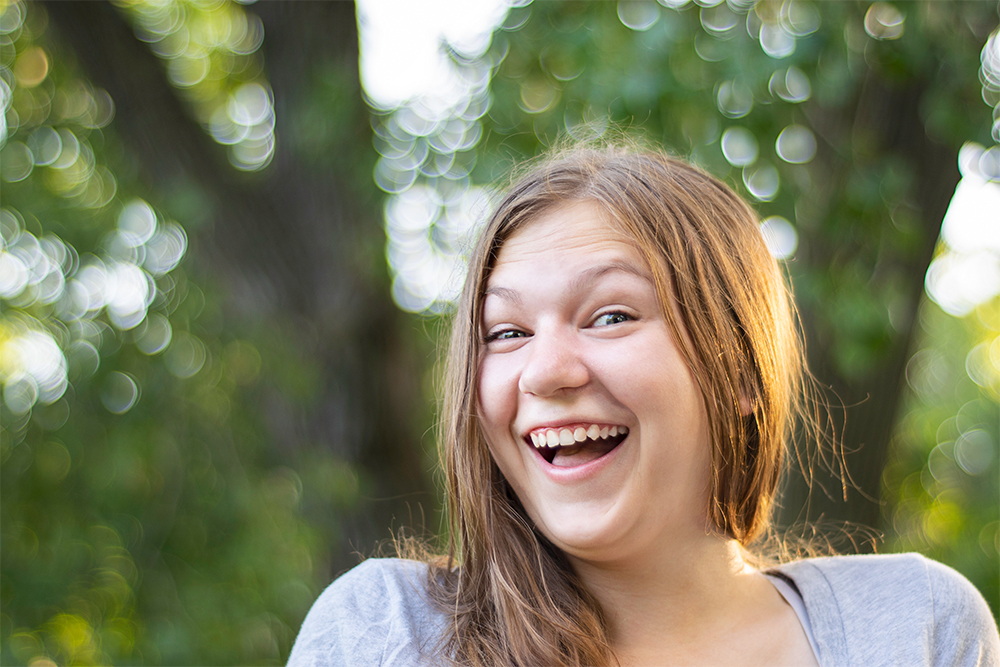
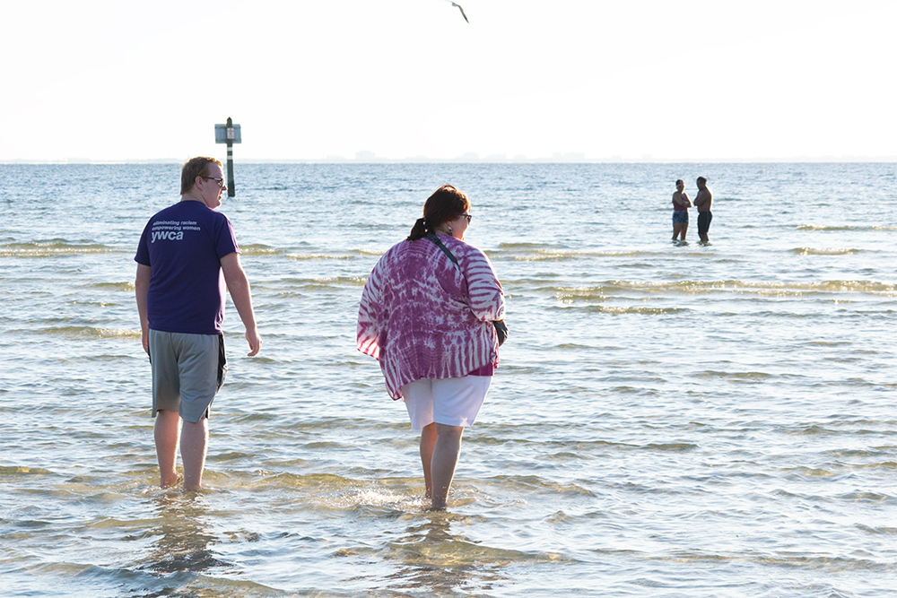
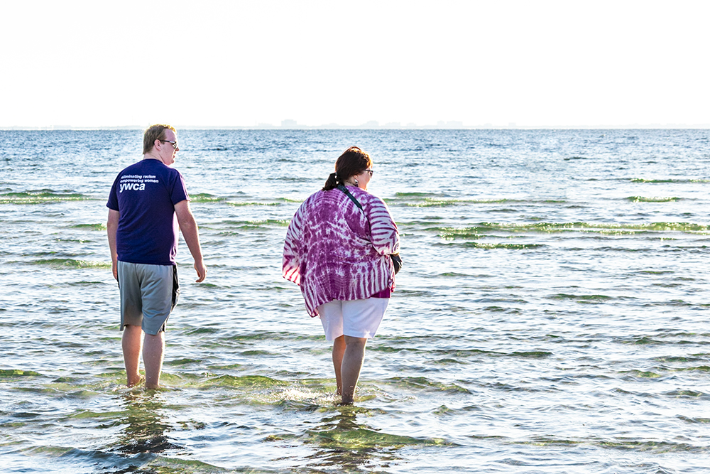
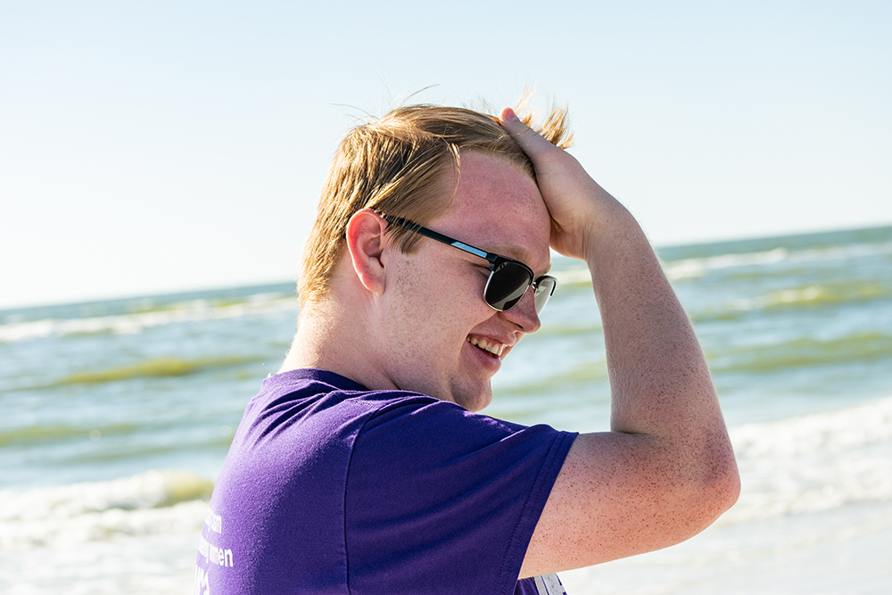
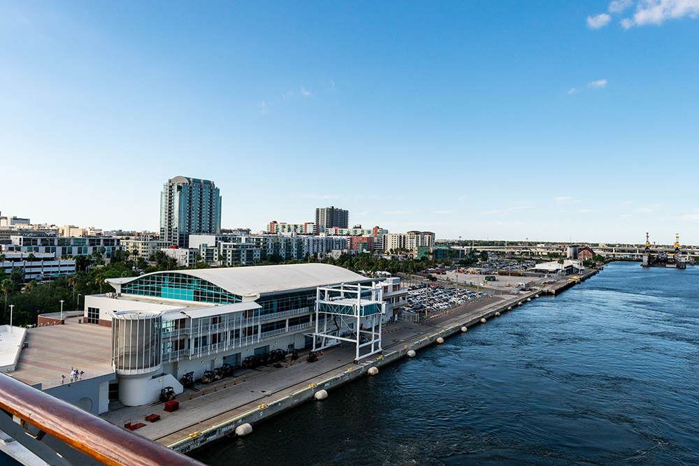
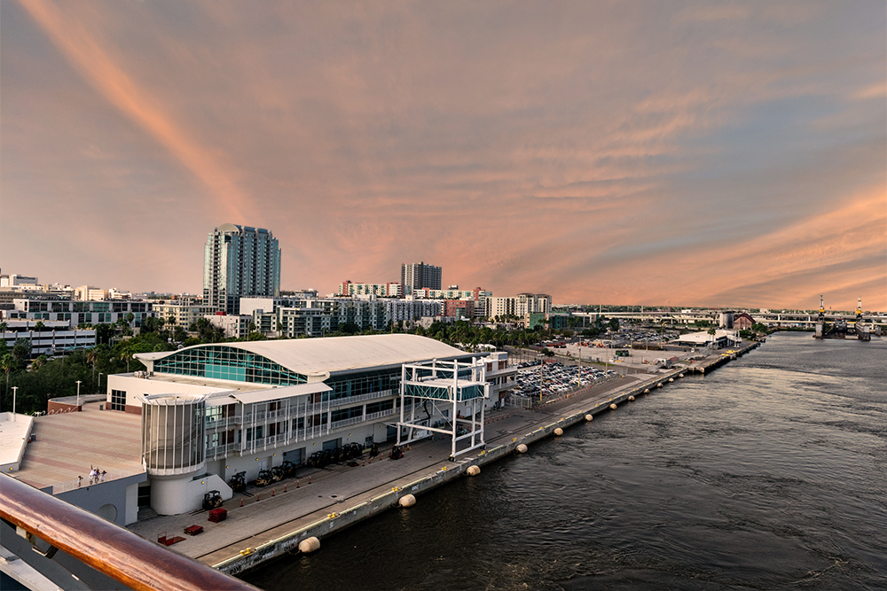

Professional Photo Corrections
Taking an image that is already good, making it what it was always meant to be. Your masterpiece but with teeth whitened, hair fixed and that weird pole in the background removed!
The Formula

The raw image

The final product
$2.50/image - Basic Edit
Color correction, clean up of blemishes, redness, bright spots, under-eye bags, dodge and burn where needed to draw focus. Removal of simple objects.

The raw image

The final product
$5/image - Advanced Edit
Basic+ minor stray hair fixing, eye brightening, teeth whitening, more severe blemish repair and background stretching and removal of more complex objects.*

The raw image

The final product
$10/image - “Just Fix It” Edit
All of the above + liquify of body and face as specified, frequency seperation when specified, major hair repair or reconstruction, glasses glare removal, braces removal among other various things that aren’t very easy but need done.
Add Ons!
$5/image - Basic subject extraction
Distinct solid contrast between subject and background
$7/image - Extensive subject extraction
More complex extractions where normal tools and methods are not useful.
$5/image - Head swap with blending
You provide the base image and another image to take the head from and will be blended believably.
Creative Composites!
$30/image - Creative 1
All the features of “Basic” with texture overlay and blending, major background reconstruction, sun flares if requested. Various special requests often fall into this category as well.
A good example would be a water tower removed from a portrait or removal of tents or people from the background. Simple extractions around people.
The raw image
The final product
$50/image - Creative 2
Again, the features of “Basic” and “Creative 1” with subject extraction, background or sky swaps with images and blending of layers.
This would be good for a bridal portrait in which the “sky” portion was blown out to compensate and needs to be replaced. Removing the sky around trees or intricate buildings is much more complex and swapping skies between scenes is often an art of itself.
Blending the layers creatively to be believable and changing buildings or nature to make it fit is not an easy task but one I’m happy to do!

The raw image

The final product
* - Depending on complexity wont be known until I have a look. Something that “seems simple” is often not as quick. A pole in a garden would be pretty easy. Removing papers from a counter at an odd angle, not as easy.